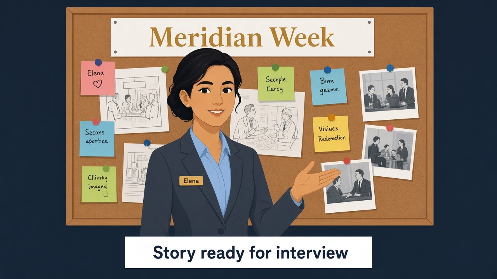

Twelve scenarios from Marcus, Sam, Nora, and Finance — each maps to a lab. Drill aloud: context → decision → proof → outcome. Read Why this answer before you open Say this.
Business problem
Interviewers ask Snowflake architecture scenarios with no Snowsight open. Elena must narrate Meridian Bank — problem, SQL proof, outcome — across the whole week.
Solution you will practice
Twelve mock questions below with “Say this” answers tied to Labs 00–13. Use FR_/AR_ vocabulary, object names (MERIDIAN_BANK, BRONZE_LANDING, SILVER_CURATED, RISK_CTRL), and cast names.
Before
Can’t retell the week — generic Snowflake slides.

After
Interview story ready — context → decision → proof.
See it — don’t memorize definitions
Every answer names Meridian objects and one proof step.
Structure
Context → decision → verify → outcome
Say Marcus’s problem, your object choice, how you proved it.
“Alex blocked with SECONDARY ROLES NONE” not “we use RBAC”
Scenario: Marcus or the regulator asks Elena in the interview chair — no laptop.
Why this answer
Lab 01 is about structural access: Alex gets a SILVER_CURATED view without PII columns, not a second copy of clients. Functional roles (FR_) hold job badges; access roles (AR_) are key-rings granted to those badges.
Snowsight keeps secondary roles active, so any proof as FR_ANALYST must include USE SECONDARY ROLES NONE or the vault still opens via lab admin.
Say this
At Meridian I use FR_ANALYST with AR_SILVER_CURATED_READ only — Alex queries SILVER_CURATED.V_CLIENT_DIRECTORY, not BRONZE_LANDING.CLIENTS. I prove the vault fails with USE SECONDARY ROLES NONE so lab-admin power is not still attached. Sam keeps FR_COMPLIANCE with AR_PII_READ for audits.
Scenario: Marcus or the regulator asks Elena in the interview chair — no laptop.
Why this answer
Marcus refused duplicate tables — one governed shelf (CLIENTS_GOV) with policies that change query results by role. Masking alters column appearance; row access hides whole countries.
Policies read CURRENT_ROLE() (primary badge), so proofs switch to FR_ANALYST vs FR_COMPLIANCE with secondary roles cleared.
Say this
One table SILVER_CURATED.CLIENTS_GOV; MP_EMAIL_MASK in RISK_CTRL checks CURRENT_ROLE(). I run identical SELECT as FR_ANALYST vs FR_COMPLIANCE — masked vs plain email, row policy limits countries for Alex.
Scenario: Marcus or the regulator asks Elena in the interview chair — no laptop.
Why this answer
Jordan owns the BRONZE_LANDING table; dbt owns the SILVER_CURATED ledger. Incremental merge with unique_key upserts changed txns instead of rebuilding history — the watermark on updated_at limits each run’s input.
Day 2 proof (new rows + status change on 1001) is the interview evidence that MERGE happened, not a full-table rewrite.
Say this
Jordan lands BRONZE_LANDING.TXN_EVENTS; dbt incremental merge on fct_orders_incremental with unique_key order_id and updated_at watermark on WH_BANK_XS. Day 2 MERGE proves we didn’t rebuild history.
Scenario: Marcus or the regulator asks Elena in the interview chair — no laptop.
Why this answer
Streams + tasks are Snowflake-native “what changed since last run?” — good when ops owns latency and scheduling inside the account. dbt incremental is git-tested analytics DAG — good when Elena’s team owns transformations and CI.
Meridian uses both on purpose: speed on the silver path, governance on published marts — not either/or religion.
Say this
Streams + tasks for ops-owned near-real-time into SILVER_CURATED.TXN_SILVER_CDC; dbt incremental when analytics owns the DAG in git. Meridian uses both: task for speed, dbt for tested marts.
Scenario: Marcus or the regulator asks Elena in the interview chair — no laptop.
Why this answer
Interviewers want a method: reproduce Alex’s SQL, open Query Profile, read bytes scanned and partition pruning before blaming the warehouse. Upsizing WH_BANK_XS is a meeting-window lever, not the first permanent fix.
Naming WH_BANK_XS ties cost (Lab 13) to performance — same warehouse Marcus pays for.
Say this
I reproduce Alex’s join in Snowsight, open Query Profile for bytes scanned and spill, check WH_BANK_XS. Fix SQL and clustering before permanently upsizing the warehouse.
Scenario: Marcus or the regulator asks Elena in the interview chair — no laptop.
Why this answer
Spill means the warehouse ran out of local memory for sort/join steps and wrote to remote storage — expensive and slow. Fix data layout (cluster on filter columns like EVENT_DATE) and SQL shape before jumping warehouse size.
Re-measure in Query History closes the loop — Profile is diagnosis, clustering/SQL is treatment.
Say this
Spill means warehouse RAM wasn’t enough — I right-size one step, narrow rows early, cluster BIG_EVENTS on EVENT_DATE so filters prune partitions. Measure again in Query History.
7
Dev needs prod-like QA without double storage day one
Scenario: Marcus or the regulator asks Elena in the interview chair — no laptop.
Why this answer
Clone is a metadata pointer in the same account — fast QA fork without copying all bytes upfront. Dev refreshes by re-cloning on a schedule; prod keeps serving Marcus on the original table.
Explicitly contrast Lab 11: clone is not geo-DR when a region dies — replication is.
Say this
Zero-copy clone TT_DEMO2 for Dev’s sprint — metadata pointer, same account. Refresh by re-clone; not geo-DR — that’s replication in Lab 11.
Scenario: Marcus or the regulator asks Elena in the interview chair — no laptop.
Why this answer
Share lets Nora query from her account with her warehouse — no CSV email, no copy of BRONZE_LANDING. A secure view hides columns and blocks unsafe joins so PII never enters the share object list.
Minimum columns is compliance design — same pattern as Alex’s view in Lab 01, but cross-account.
Say this
SECURE VIEW SILVER_CURATED.V_SHARE_TXNS — minimum columns — inside SHARE_MERIDIAN_TXNS. Nora uses her warehouse; no BRONZE_LANDING CLIENTS or SSN.
Scenario: Marcus or the regulator asks Elena in the interview chair — no laptop.
Why this answer
Three tools, three questions: partner read (share), same-account QA (clone), region/account survival (replication + failover). Share does not replace a warm secondary when the provider region is down.
Name RPO/RTO from replication lag and promotion runbook — Marcus wants numbers, not feature names.
Say this
Share is cross-account read of live provider objects for Nora. Replication copies MERIDIAN_BANK to a secondary region/account for RPO/RTO. Clone is same-account QA for Dev — three different tools.
Scenario: Marcus or the regulator asks Elena in the interview chair — no laptop.
Why this answer
ACCOUNT_USAGE views attribute spend after the fact — warehouse metering for totals, query history for “who ran the expensive SQL.” Mention ~3 hour lag so Finance does not expect live pennies.
Map warehouses to teams in Meridian’s chargeback model; resource monitors are the forward-looking guardrail (scenario 12).
Say this
ACCOUNT_USAGE.WAREHOUSE_METERING_HISTORY by WH_BANK_XS mapped to teams; QUERY_HISTORY for disputes. Resource monitors NOTIFY at 75%, SUSPEND at 100%.
Scenario: Marcus or the regulator asks Elena in the interview chair — no laptop.
Why this answer
Time Travel and UNDROP recover operator mistakes inside retention — different problem from region loss. Point-in-time queries (AT/OFFSET) fix bad updates without restoring the whole table.
Least privilege limits who can DROP; replication is for geography, not replacing UNDROP for typos.
Say this
Inside retention: UNDROP TABLE. Point-in-time: AT/OFFSET or clone before bad UPDATE. Least privilege so DROP is rare; replication for region loss not operator typos.
Scenario: Marcus or the regulator asks Elena in the interview chair — no laptop.
Why this answer
FinOps is guardrails plus engineering: resource monitor suspend stops the warehouse; auto-suspend reduces idle burn; Slim CI stops full dbt rebuilds in every PR.
Clustering and incremental facts reduce bytes scanned — same dollars story as Labs 02, 07, and 08, not monitors alone.
Say this
RM_BANK_LAB on WH_BANK_XS, aggressive auto-suspend, Slim CI so PRs don’t full-build dbt. Clustering and incremental facts cut bytes scanned — FinOps is guardrails plus engineering discipline.
Elena’s wrap-up (say this out loud)
“I spent one week as architect for Meridian Bank: built MERIDIAN_BANK with BRONZE_LANDING and SILVER_CURATED, separated FR_ job badges from AR_ key-rings so Alex never saw SSN,
incremental dbt on txn facts, policies in RISK_CTRL, medallion paths to GOLD_MART, automated BRONZE_LANDING with streams and COPY,
tuned WH_BANK_XS with Profile and clustering, recovered mistakes with Time Travel and clones for Dev, shared secure views with Nora, and explained DR and FinOps to Marcus.
Outcome: I can answer scenario questions with names, objects, and proof — not generic Snowflake slides.”